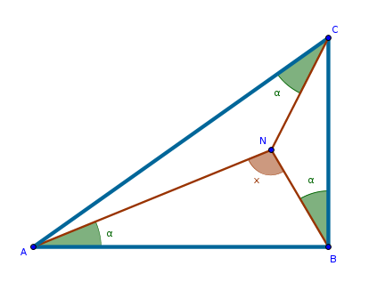
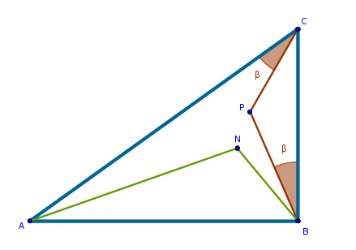
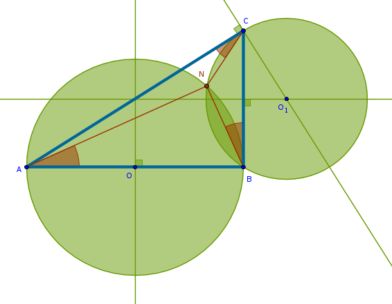
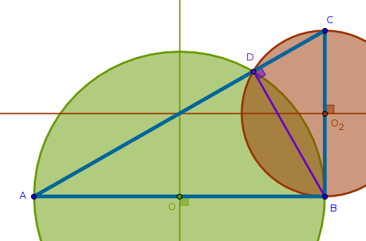
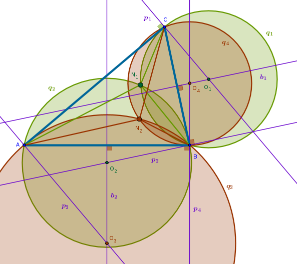
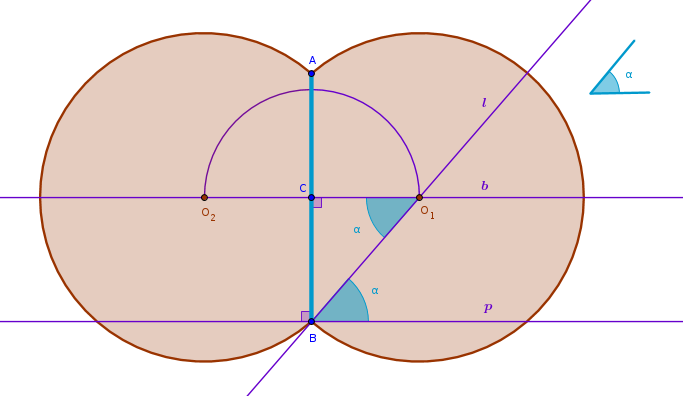

Brocard Points
For some time at the very end of the nineteenth and the very beginning of the twentieth centuries Hungary held Mathematical Contests aimed at mathematically inclined youth. The problems from these competitions were translated into English and published in a series of small books, one of which, "Hungarian Problem Book I based on the Eotvos Competitions, 1894-1905", I own.
Here is a problem number two from the 1895 competition:
construct a point \(N\) inside an arbitrary right triangle \(ABC\) so that all three angles \(NBC\), \(NCA\) and \(NAB\) are equal
Process
Why right triangle? Why does it have to be right triangle? How this fact can be used?
What approach can be used to solve this problem? Division? Divide the problem into parts so simple that each one can be solved separately, combine the solutions of the parts into a solution of the whole.
What are the parts? The angles:
If the angle \(\angle ABC\) is right then the angle \(\angle NBA\) is:
$$90 - \alpha$$Since the sum of the interior angles in any triangle is always two right angles, for \(\triangle ANB\) we have:
$$\angle NAB + \angle ANB + \angle NBA = 180$$ $$\alpha + x + 90 - \alpha = 180$$ $$x + 90 = 180$$ $$x = 90$$
A ninety degree angle - can a circle be of use*? In the final construction,
whatever the angles \(\alpha\) will happen to be, the angle \(ANB\) will
have to be right:
If a circle is constructed with \(AB\) as its diameter then for any point \(N\) on its circumference the angle \(ANB\) will be right.
Constructing such a circle is trivial - bisect \(AB\) to locate \(O\) which will be the circle's center and will also determine the circle's radius, \(OB = OA\).
The points on the circumference of that circle outside \(\triangle ABC\) are not interesting since the problem states that the point \(N\) must be located inside the triangle.
Consider the circular arc inside the triangle. Any point on that arc will make the angle \(\angle ANB\) right ensuring that the angles \(NAB\) and \(NBC\) are equal**. That solves the problem only partially. The fact that:
$$\angle NAB = \angle NBC$$does not guarantee that:
$$\angle NCA = \angle NAB = \angle NBC$$
Now what?
Examine the remaining triangles \(CNB\) and \(CNA\) in the same way we examined the triangle \(ANB\). Let \(\angle CNB = y\) and \(\angle CNA = z\). Then:
$$x + y + z = 360$$ $$x = 90$$ $$y + z = 270$$ $$\alpha + y + \angle NCB = 180$$ $$\alpha + z + \angle NAC = 180$$Does not seem to go anywhere. Dead end.
Idea: construct arbitrary angles \(PCA\) that are equal to the angles
\(PBC\) completely disregarding \(N\) and the angles associated with it.
Assume that \(P\) is somewhere inside the triangle and is different from \(N\):
If we can somehow make the angle \(PBC\) be equal to the angle \(NBC\) and make \(P\) coincide with \(N\) then by the virtue of the previous circle-based construction the angle \(NAB\) will have no choice but to be equal to the angle \(NBC\) which is equal to the angle \(PBC\) which is equal to the angle \(PCA\) which solves the problem completely.
How can we do that?
How many angles such that \(\angle PCA = \angle PBC\) can be constructed?
An infinite amount. How about just a few?
The vertexes of the constructed triangles - points \(P\) - seem to be located on an arc of some sort. Not very clear where this is going though.
Simplify. Instead of applying this \(\angle PCA = \angle PBC\)
construction to a given acute angle \(\angle ACB\) apply it to a simpler -
right angle. Make the angle \(ACB\) right temporarily, for the experimental
purposes. Throw out the rest of the irrelevant details and construct some
number of points \(P\) for each of which \(\angle PCA = \angle PBC\):
All the points \(P\) seem to belong to a circumference of a circle. Hypothesis - the center of that circle must be the middle of \(CB\). Is it? Looks plausible. Then, \(AC\), being perpendicular to the circle's diameter \(CB\), is tangent to that circle.
If \(AC\) is pushed down as a lever welded permanently to the circle
\(CO_1B\) at \(C\) then the angle \(ACB\), becoming smaller and smaller,
will eventually be equal to the corresponding angle of the given right
triangle:
And, because the connection of \(AC\) to the circle \(CO_1B\) at \(C\) is permanent, the circle's diameter will unbuckle itself from \(CB\) but it will remain perpendicular to \(AC\).
Consequently, the circle's center \(O_1\) will start gliding along the perpendicular bisector of \(CB\). The radius of the circle will grow. What used to be a full half circle will now become a smaller and smaller arc trapped inside the triangle.
Hence, the center of that circle must be at the intersection of the perpendicular bisector of \(CB\) and a perpendicular to \(AC\) through the point \(C\)***. The circles \(AOB\) and \(CO_1B\) will intersect at two points. One of them will be inside of the triangle and that is the point we are looking for.
Stop the timer. Problem solved:
The solution is****:
- bisect \(AB\) to locate the point \(O\)
- circle with center at \(O\) and radius \(OA = OB\)
- bisect \(CB\)
- perpendicular to \(AC\) through \(C\)
- \(CB\)'s bisector and the above perpendicular intersect at \(O_1\)
- circle with the center at \(O_1\) and radius \(O_1C = O_1B\)
- the intersection of the two circles inside the triangle is the point sought after, \(N\)
Conclusions
- it took me about an hour, hour and a half of non-continuous effort to work out the solution
- as much as we want the search for a solution to be purely logical and smooth it rarely is. Some ideas do form purely logical chains but are very often interspersed with fuzzy hunches, gut feelings and vague thoughts with no explanation of where did they come from. Some ideas lead nowhere while others actually lead to a solution
- while pattern recognition is almost instantaneous the search for the pattern, not surprisingly, is anything but. If we do not know exactly what to look for then how can such a search be algorithmisized?
- hind sight is always perfect. After we solve a problem we quite often realize how inefficient our search for that solution was
After I have found the proofs for my hunches I realized that my search for the second circle was way too complicated - I practically rediscovered B3P32 from scratch. Why did I not see that proposition with the second circle when I have just used it for the first?
- the comparison of my solution to the one presented at the end of the book showed that while my construction was indeed correct my reasoning was totally different. The book also gave another, even simpler, construction that does not need the second circle - only the first one
- when we publish our solutions and proofs they look polished and glossy. What remains behind the scenes is less glamorous but just as, if not more, interesting
Proofs, Explanations
that were omitted during the real time search for a solution.
* The association between a right angle and a circle comes from Euclid's B3P31 also known as Thales' Theorem.
** In this construction the angles \(NAB\) and \(NBC\)
are equal because of B3P32, a tangent to a circle and the
angles in the alternate segments.
*** This statement is true because of
B3P32 and B3P21. Construct the line segment
\(ND\) where \(D\) is the second point of intersection of \(CO_1\) and the
circle \(CO_1B\):
Apply B3P32 to the tangent \(AC\), circle \(CO_1B\) and the angle \(NDC\):
$$\angle NCA = \angle NDC$$But \(\angle NDC\) subtends the arc \(NC\) which is also subtended by \(\angle NBC\). From B3P21 it follows that:
$$\angle NDC = \angle NBC$$from where it follows that:
$$\angle NCA = \angle NBC$$
**** Since there are no additional constraints in this
problem, it is also possible to carry out the similar steps with the other
vertex and side of the right triangle by constructing the first circle on
\(CB\) as its diameter and the second circle on the perpendicular to \(AC\)
through \(A\) in which case three different angles will be equal to one
another:
Derivatives
1) From the previous construction we conclude that the two circles built on the sides of the right triangle as their diameters intersect at two points. The first intersection point is the vertex of the right angle, \(B\). The other intersection point, \(D\), is located on the hypotenuse of the right triangle.
If the magnitudes of lengths of two sides of a right triangle are known then in what ratio does \(D\) cut \(AC\)?
Since \(D\) belongs to the circumferences of both circles then either circle can be used to prove that based on B3P31:
$$\angle ADB = \angle BDC = 90^{\circ}$$It follows then that \(\triangle ABC, \triangle ADB\) and \(\triangle BDC\) are similar and from B6P4 it follows that their sides about equal angles are in the same proportion. From the similarity of \(\triangle ABC\) and \(\triangle ADB\) it follows that:
$$\frac {AD}{AB} = \frac {AB}{AC}$$ $$AD = \frac {AB^2}{AC}$$From the similarity of \(\triangle ABC\) and \(\triangle BDC\) it follows that:
$$\frac {DC}{CB} = \frac {CB}{AC}$$ $$DC = \frac {CB^2}{AC}$$from where it follows that:
$$\frac {AD}{DC} = \frac {AB^2}{AC} \times \frac {AC}{CB^2} =$$ $$\frac {AB^2}{CB^2} =$$ $$\Big(\frac {AB}{CB}\Big)^2 =$$ $$tan^2( \angle ACB)$$From the straight edge and compass construction perspective we obtain a way to to cut a line segment of length:
$$\sqrt{a^2 + b^2}$$in the ratio:
$$\Big(\frac {a}{b}\Big)^2$$if \(a\) and \(b\) are given.
2) Once a solution for a right triangle is found we can generalize the
problem for an arbitrary triangle. Below we present a solution for an acute
triangle. You are encouraged to perform the corresponding construction for
an obtuse triangle yourself.
In case of a right triangle the side \(AB\) coincided with the perpendicular to \(CB\) through \(B\) and, conversely, the side \(CB\) coincided with the perpendicular to \(AB\) through \(B\). That is why we were able to construct the first pair of circles simply by bisecting \(AB\) and \(CB\). Since in an acute or an obtuse triangle no angle is right, the perpendiculars to the corresponding sides of the triangle must be constructed explicitly:
For example, construct a perpendicular \(p_1\) to \(AC\) through \(C\). Moving clockwise, bisect \(CB\) with \(b_1\). The intersection of \(p_1\) and \(b_1\) locates the center \(O_1\) of the circle \(q_1\).
Moving clockwise, construct a perpendicular \(p_2\) to \(CB\) through \(B\). Moving clockwise, bisect \(AB\) with \(b_2\). The intersection of \(p_2\) and \(b_2\) locates the center \(O_2\) of the circle \(q_2\). One of the intersection points of \(q_1\) and \(q_2\) is \(N_1\) - the point sought after.
Still moving clockwise, construct a perpendicular \(p_3\) to \(AC\) through \(A\). The intersection of \(p_3\) and \(b_2\) locates the center \(O_3\) of the circle \(q_3\).
Changing direction and moving counterclockwise, construct a perpendicular \(p_4\) to \(AB\) through \(B\). The intersection of \(p_4\) and \(b_1\) locates the center \(O_4\) of the circle \(q_4\). One of the intersection points of \(q_3\) and \(q_4\) is \(N_2\) - the point sought after.
The points \(N_1\) and \(N_2\) are known as Brocard Points.
3) Lastly, in connection with all the circles that we have constructed
so far:
what is the locus of points from which a given line segment is always seen from a given angle?
From B3P21, in a circle the angles in the same segment equal one another, it follows that the above locus is two partial circumferences of equal radii with centers on the perpendicular bisector of the given line segment which they share as a common chord - a figure eight with a large waist-line.
To reconstruct these circumferences Reverse Order approach can be used. Assume that the problem has been solved. We first observe that B1P29, a straight line falling on two straight parallel lines makes the alternate angles equal to one another, is applicable to \(AB\)'s bisector, \(b\), a perpendicular to \(AB\) through \(B\), \(p\), and a leg of a copy of the given angle originating from \(B\), \(l\):
By construction:
$$O_1A = O_1B$$since they are the radii of the same circle from where it follows that \(\triangle AO_1B\) is isosceles. From B1P5, in an isosceles triangle internal angles at the base are equal, it follows that:
$$\angle BAO_1 = \angle ABO_1$$By construction \(O_1C\) is perpendicular to \(AB\) and hence by definition:
$$\angle ACO_1 = \angle BCO_1$$Since the two corresponding angles in \(\triangle ACO_1\) and \(\triangle BCO_1\) are equal and B1P32 states that the sum of internal angles in any triangle is two right angles it follows that the remaining angles of \(\triangle ACO_1\) and \(\triangle BCO_1\) are equal:
$$\angle BO_1C = \angle AO_1C = \alpha$$from where it follows that:
$$AO_1B = 2\alpha$$Being central, the angle \(AO_1B\), according to B3P20, is exactly twice the angle at the circumference, \(\alpha\), since both of these angles subtend the same arc.
The above line or reasoning completes the proof that the following \(13-\)step construction solves the problem:
- bisect \(AB\) with \(b\) to locate \(C\), three steps
- perpendicular \(p\) to \(AB\) through \(B\), three steps
- copy of the given angle \(\alpha\) on \(p\) with a vertex at \(B\) with the remaining leg \(l\), four steps
- \(b\) and \(l\) intersect at \(O_1\)
- circle with a center at \(O_1\) and a radius \(O_1A = O_1B\), one step
- circle with a center at \(C\) and a radius \(CO_1\) intersects \(b\) at \(O_2\), one step
- circle with a center at \(O_2\) and a radius \(O_2A = O_2B\), one step
\(\blacksquare\)